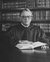

FORMER JUDGES
Judge James B. Young
James Young was born in 1928 in Kankakee Illinois. He received his undergraduate degree from
Franklin College and his law degree from Indiana University School of Law in Bloomington in 1955.
He was admitted to practice before the Indiana Supreme Court the same year. From 1951 to 1955,
he served in the United States Army in the Counter Intelligence Corps.
Judge Young was appointed to Court of Appeals of Indiana in1978 and was retained in November
1960. He served the Court until his retirement in 1988. Judge Young served as City Attorney for
Franklin, Indiana from 1958 to 1962 as County Attorney for Johnson County from 1966 to 1975, as
State Senator from 1966 to 1970. Judge Young was elected to the State Senate in 1966, serving
Until 1970, and was Special Assistant to the Governor for Legislative Affairs from 1973 to 1975. He
Was appointed U.S. attorney for the South District of Indiana in 1975. He was a Korean War Veteran,
a member of the American judicature Society, and a member of the Florida and Indiana State Bar
Associations. He was named a Sagamore of the Wabash by Governor Otis Bowen the highest honor
Given by an Indiana Governor at that time.
He died on August 29 1998.
Franklin College and his law degree from Indiana University School of Law in Bloomington in 1955.
He was admitted to practice before the Indiana Supreme Court the same year. From 1951 to 1955,
he served in the United States Army in the Counter Intelligence Corps.
Judge Young was appointed to Court of Appeals of Indiana in1978 and was retained in November
1960. He served the Court until his retirement in 1988. Judge Young served as City Attorney for
Franklin, Indiana from 1958 to 1962 as County Attorney for Johnson County from 1966 to 1975, as
State Senator from 1966 to 1970. Judge Young was elected to the State Senate in 1966, serving
Until 1970, and was Special Assistant to the Governor for Legislative Affairs from 1973 to 1975. He
Was appointed U.S. attorney for the South District of Indiana in 1975. He was a Korean War Veteran,
a member of the American judicature Society, and a member of the Florida and Indiana State Bar
Associations. He was named a Sagamore of the Wabash by Governor Otis Bowen the highest honor
Given by an Indiana Governor at that time.
He died on August 29 1998.
